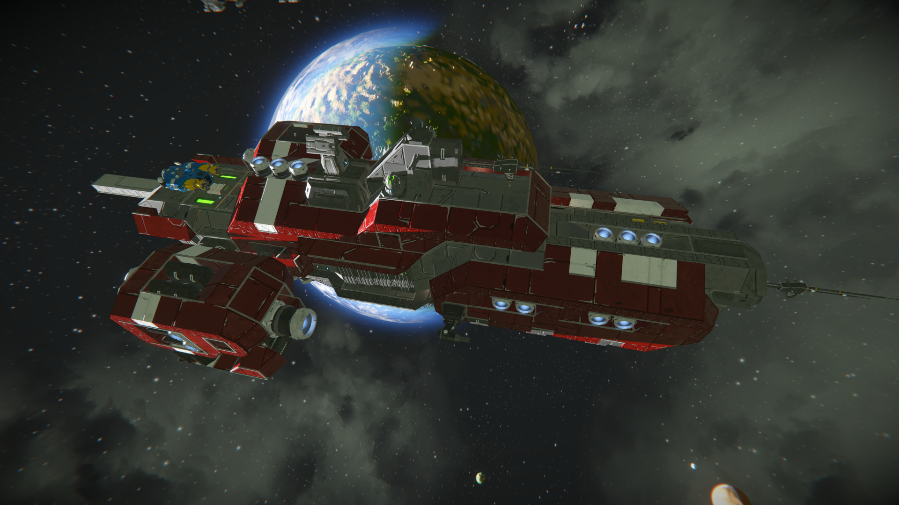

Space Engineers is one of my favorite games because it allows players to build ships, vehicles, and stations while exploring space and planets.
I have been playing this game for years, and I enjoy how creative it can be. Players can design their own builds, solve engineering problems, and explore different environments.
One of the things I like most about Space Engineers is how it combines creativity with problem solving. It gives players the freedom to build almost anything they can imagine.

This image shows a classic red ship included in Space Engineers. It is a recognizable design that many players in the community are familiar with.
Visit the Official Space Engineers Website
| Feature | Description | Why I Like It |
|---|---|---|
| Ship Building | Players can build custom ships, rovers, and stations. | It lets me be creative and design my own ideas. |
| Exploration | You can travel through space and visit planets. | It makes the game feel big and exciting. |
| Survival Mode | Players gather resources and manage power, oxygen, and fuel. | It adds challenge and makes each build more important. |
| Multiplayer | Players can build and explore with friends. | It is fun to work on projects together. |